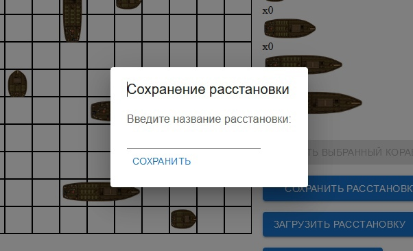
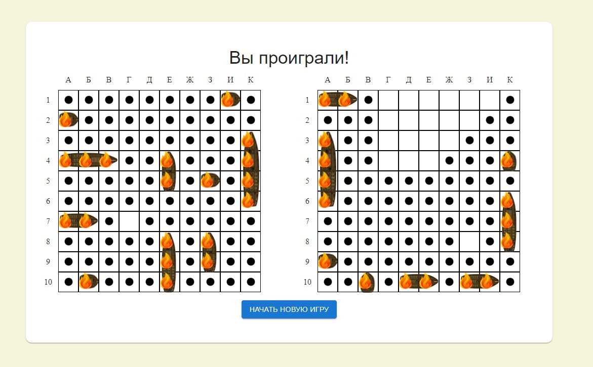

«Морской бой» – игра для двух участников, в которой игроки по очереди называют, сообщают иным способом, координаты на карте соперника. Если у врага с этими координатами имеется «корабль», то корабль или его палуба (дека) убивается, попавший делает еще один ход. Цель игрока: первым убить все игровые «корабли» врага.
Игровое поле — обычно квадрат 10×10 у каждого игрока, на котором размещается флот кораблей. Горизонтали обычно нумеруются сверху вниз,
а вертикали помечаются буквами слева направо. При этом используются буквы русского алфавита от «а» до «к» (буквы «ё» и «й» обычно пропускаются)
либо от «а» до «и» (с использованием буквы «ё»), либо буквы латинского алфавита от «a» до «j».
Размещаются:
1 корабль — ряд из 4 клеток («четырёхпалубный»; линкор)
2 корабля — ряд из 3 клеток («трёхпалубные»; крейсера)
3 корабля — ряд из 2 клеток («двухпалубные»; эсминцы)
4 корабля — 1 клетка («однопалубные»; торпедные катера)
При размещении корабли не могут касаться друг друга сторонами и углами.
Рядом со «своим» полем чертится «чужое» такого же размера, только пустое. Это участок моря, где плавают корабли противника.
При попадании в корабль противника на чужом поле ставится крестик, при холостом выстреле — точка. Попавший стреляет ещё раз.
Победителем считается тот, кто первым потопит все 10 кораблей противника.

Для того, чтобы зарегистрироваться, придумайте логин и введите его в поле "Ввести логин"; затем нажмите на кнопку "Выбрать аватар" и в открывшемся меню кликом ЛКМ выберите один из предложенных аватаров, после чего нажмите "Подтвердить". Когда введен логин и выбран аватар, нажмите "К игре".

Для того, чтобы авторизоваться, введите свой логин и нажмите "Войти". Если вы не зарегистрированы, нажмите "Зарегистрироваться".
Нажмите "Одиночный" для игры против ИИ. В открывшемся окне нажмите на кнопку желаемого уровня сложности. После этого вы перейдете к расстановке кораблей.

Нажмите "Против игрока" для перехода на страницу создания онлайн-игры. Если у вас есть код игры, введите его в поле "Введите код игры". Если у вас нет кода игры, нажмите "Сгенерировать код". Система автоматически создаст код вашей игры. Скопируйте его и сообщите противнику, после чего ждите его подключения; как только противник подключится к игре, вы автоматически перейдете на страницу расстановки кораблей.

Нажмите на доступный (счетчик под изображением не равен 0) корабль. Затем нажмите на стрелки "влево-вправо" на клавиатуре, чтобы изменить его ориентацию. После этого поставьте его на свободное место, нажав на клетку, где должен располагаться "нос" корабля. Если клетки, на которые должен встать корабль, не заняты, корабль будет поставлен, а окружающие его клетки отмечены точками. Чтобы отпустить взятый корабль, нажмите Esc; чтобы убрать корабль с поля, нажмите на него и затем нажмите "Удалить выбранный корабль".
Нажмите на кнопку "Авторасстановка" и в открывшемся меню выберите одну из шести (5 стратегий + случайная) предложенных вариаций.
Если у вас есть сохраненные расстановки, нажмите на кнопку "Загрузить расстановку" и в открывшемся меню выберите одну из сохраненных расстановок. Чтобы сохранить расстановку, нажмите "Сохранить расстановку" и в открывшемся окне введите имя файла; кнопка неактивна, пока не все корабли расставлены.

Данный способ прост – расположить все свои корабли по краям, чтобы середина поля осталась пустой.
Пока противник будет бессистемно палить, гадая, куда подевались все суда, можно спокойно искать его флот.
Такая тактика может себя не оправдать, особенно, когда соперник догадается, в чем фишка. Если секрет расположения судов раскроется,
соперник за минимальное количество ходов потопит всю флотилию игрока.
Второй способ более продуман и похож на тактику «Половина поля». Для этого линкор, крейсера и эсминцы расположить по берегам,
а вот катера разбросать по всему полю.
Размещая крупные корабли таким образом, вы оставляете много свободного места для катеров. Стратегии для поиска катеров не существует,
и соперник будет палить наугад, теряя драгоценные ходы.

Третий способ является модификацией второго. Линкор, крейсеры и эсминцы "прижимаются" к двум соседним сторонам, а катера расставляются на оставшемся пространстве. В отличие от предыдущих двух "Берегов", в третьем способе для расстановки больших кораблей используются три ряда, а не один крайний, т.к. в одном ряду все могут не уместиться.

Корабли расставляются так, чтобы ни один не задевал главную и побочную диагонали поля. Хороша тем, что ее можно комбинировать с другими стратегиями.
Крупные корабли выставляются в одной половине поля, катера - в другой. Такое расположение делает попадание в катера маловероятным.
Выбирается угол, из которого начинается стрельба, и направление, после чего клетки простреливаются в шахматном порядке. Стратегия хороша против крупных кораблей, но, как и всякая другая стратегия, не позволяет точно обнаружить катера.

Поле разбивается на 4 квадрата 4 на 4, и каждый квадрат начинает простреливаться по главной и побочной диагоналям. После уничтожения квадратов останется прострелять образовавшийся крест посередине и добить пустые клетки.
Стратегия рассчитана на скорейшее нахождение линкора, т.к. его уничтожение сразу убирает много точек. Для этого поле простреливается "гусиными лапками" (синие точки на рисунке). Линкор будет найден максимум за 24 выстрела. После этого начинают простреливаться клетки, отмеченные красным, для нахождения крейсеров; зеленые точки обозначают то, куда надо стрелять для нахождения эсминцев. Стратегии нахождения катеров не существует.
После расстановки кораблей нажмите кнопку "Готов". Если вы играете против ИИ, игра начнется сразу же; если вы играете против игрока, игра начнется
после того, как оба игрока нажмут "Готов".

Над полем будет надпись "Ваш ход" или "Ход противника" в зависимости от того, кто ходит. Во время своего хода вы можете нажать на любую свободную клетку поля; клетки моря обозначены точкой, убитый корабль - текстурой корабля с огоньком сверху, подбитая палуба - красным крестиком. Если вы уничтожили корабль, система автоматически отметит клетки моря вокруг него. Игра идет по стандартным правилам "Морского боя". Внизу поля находится кнопка "Сдаться", по нажатию на которую игра прекратится, и вы будете возвращены на выбор режима игры. После победы одного из игроков над полем появится соответствующая надпись, а внизу - кнопка возвращения на страницу выбора режима игры.
